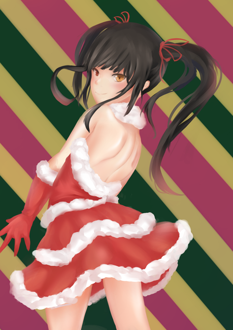

<div id="article_content" class="text-paragraph article_container">補圖(這聖誕節都過那麼久，大丈夫嗎?<div><br></div><div>嘗試利用比較明顯的膚色對比</div><div>坦白說現在看覺得有些太油了(?</div><div>算是有些失敗的作品...</div><div><br></div><div><br></div><div><br></div><div>勇敢面對過去(握拳</div><div>當然，還是有我喜歡的部分(那個裸足prpr</div><div>咳咳，不是，我是說一些陰影的處理</div><div>總之，整體上還是OK的!</div><div>希望會喜歡!</div><div><br></div><div><br></div><div><div>喜歡還請追蹤專頁:<font color="#ff0000"><a href="https://www.facebook.com/Bushyeyebrowscat/" target="_blank">帽捲</a></font></div><div>或是訂閱小屋</div></div><div><br></div><script>
$('article.c-text img').load(function () {
// 表格內圖片大於表格寬時，設為 100%
if ($(this).parents('table').length != 0) {
if ($(this).width() >= $(this).parents('td').width()) {
$(this).width('100%');
} else {
$(this).width($(this).width() + 'px');
}
}
});
</script></div>